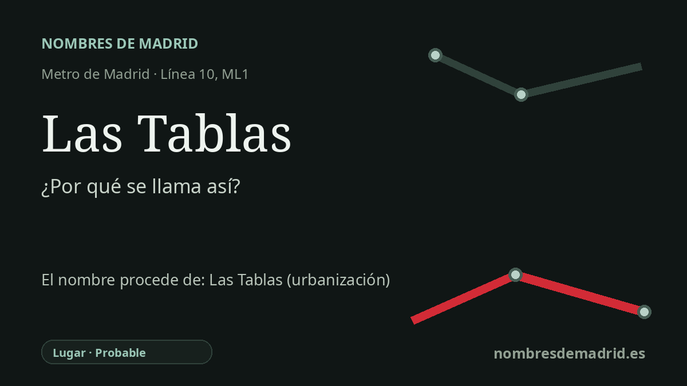

Publicado el · Investigación de Nombres de Madrid · Cómo verificamos cada origen · 8 fuentes consultadas
Respuesta rápida
La estación de Las Tablas debe su nombre al desarrollo residencial madrileño de Las Tablas, documentado urbanísticamente como UZI 0.08 Las Tablas. El sentido antiguo de 'tabla' como faja o pedazo cuadrilongo de tierra de cultivo encaja con el paisaje agrario previo, aunque esa relación es una interpretación fundada y no un acto de denominación documentado.
La historia del nombre
La estación de Las Tablas recibe el nombre del lugar al que sirve: el área residencial de Las Tablas, en el norte de Madrid, dentro de Fuencarral-El Pardo. Hoy el nombre aparece tanto en la estación de la línea 10 de Metro de Madrid como en la terminal de la ML1 de Metro Ligero, y el CRTM identifica el intercambiador y sus accesos en la calle de Palas de Rey.
Detrás del barrio moderno hay una denominación urbanística: UZI 0.08 Las Tablas. Los documentos municipales de planeamiento identifican Las Tablas como uno de los grandes desarrollos del norte, y una ficha municipal de seguimiento de 2008 recoge las aprobaciones del Programa de Actuación Urbanística y del Plan Parcial antes de que el barrio quedara plenamente urbanizado.
La palabra remite a un paisaje rural anterior. En el español agrícola, la RAE define 'tabla' como faja de tierra, plantel o pedazo cuadrilongo preparado para cultivos, vides, legumbres o árboles. Ese sentido encaja con los terrenos abiertos al norte del antiguo Fuencarral antes de la llegada de las viviendas, las oficinas, las vías rápidas y el metro ligero.
La cronología exige un matiz. Las Tablas suele asociarse al Plan General de Madrid de 1997 y a la ola de PAU construidos en los años 2000, pero la documentación municipal recoge la aprobación definitiva del PAU de Las Tablas el 24 de mayo de 1995 y la de su plan parcial el 28 de julio de 1995; el plan de 1997 actuó después como marco urbanístico general en el que quedó incorporado. La estación de Metro abrió con MetroNorte el 26 de abril de 2007, y la ML1 llegó a Las Tablas el 24 de mayo de 2007.
Un hito visible de la nueva Las Tablas es el Distrito Telefónica, inaugurado en 2008 en la misma zona. La propia web del centenario de Telefónica describe el traslado a Las Tablas y el nombre original Distrito C, con el campus acristalado de Rafael de la Hoz y una gran cubierta solar. Ese campus es un contexto urbano relevante, pero no dio nombre a la estación: el nombre procede del topónimo Las Tablas.